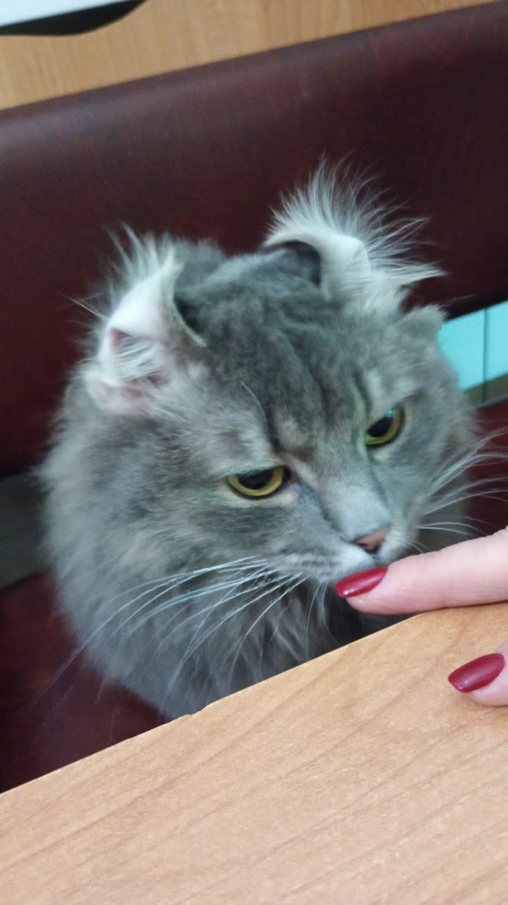
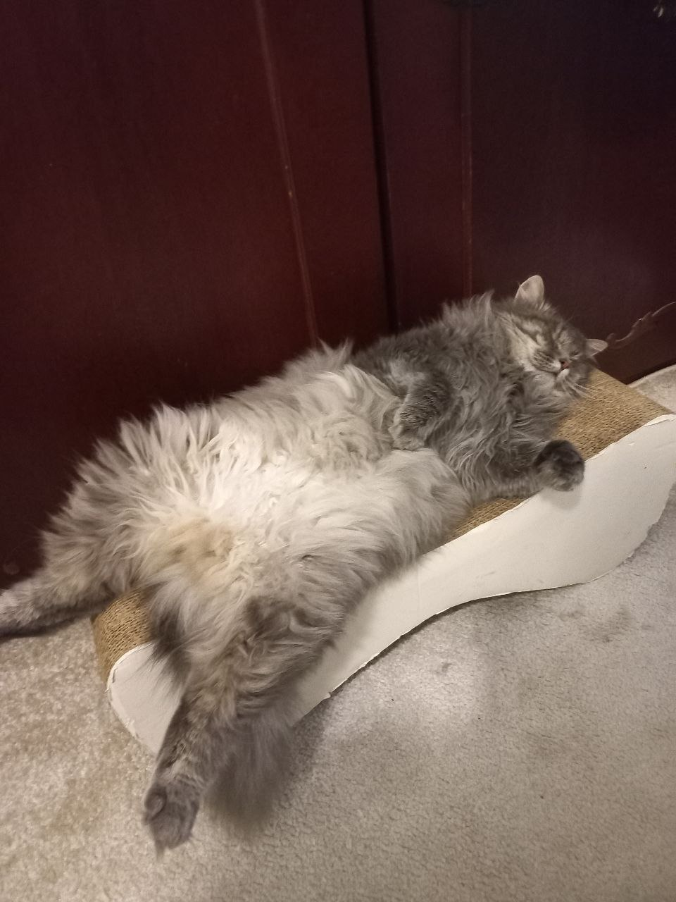
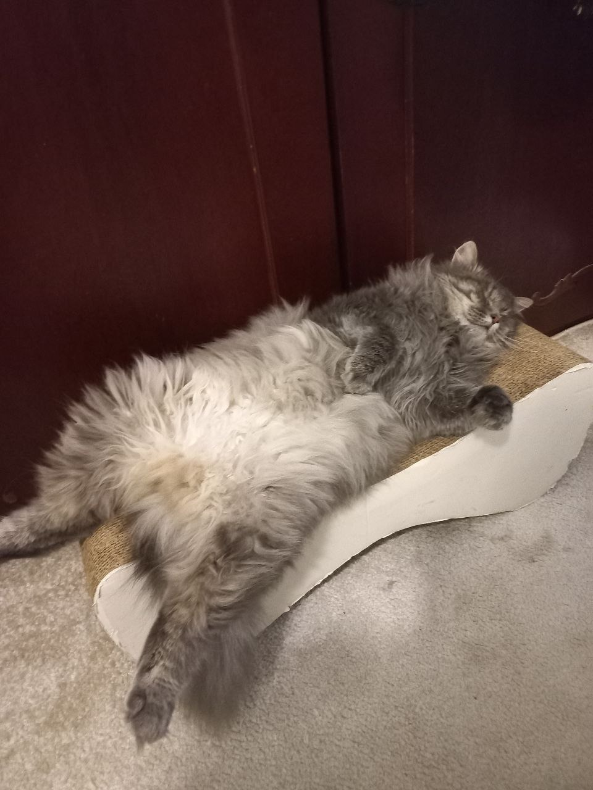

Ця сторінка присвячена моєму любому котику - Графу
 

Граф - кіт в самому розквіті сил та до міри затовстий
Вік - 3 роки
Вага - 5 кг
Місце народження - м. Покровськ
Особливі прикмети - жовті очі і білий животик, характер доволі войовничий
Місце проживання - Дніпропетровська обл
Основні характеристики для наглядності наведені в таблиці нижче
| Вік | Вага | Довжина,см | Шерстистість |
|---|---|---|---|
| 3 р | 5кг | 70 см | +++ |